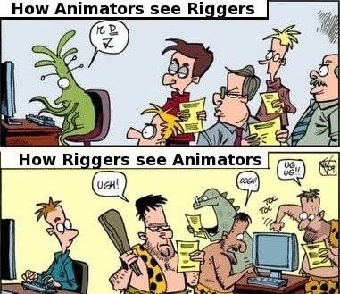
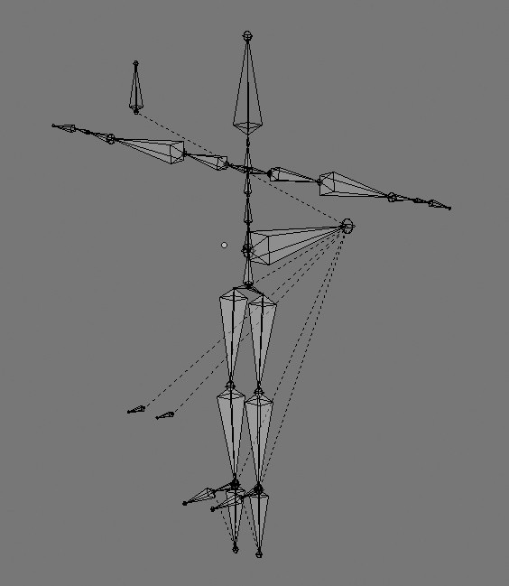
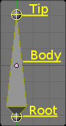
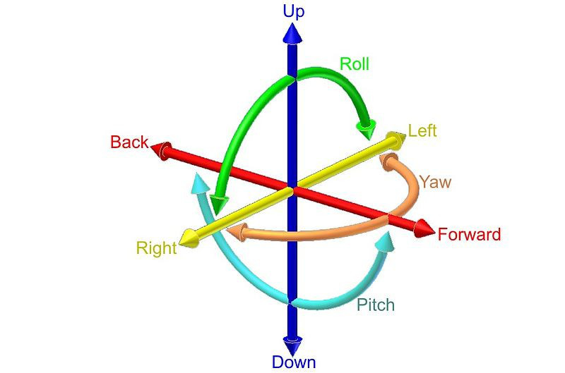

Introdução ao rigging no Blender
Definição
Rigging é o processo de construção de uma armadura (armature) para controlar/animar um objeto. É uma especialidade importante, cria a ferramenta utilizada pelo animador.
 Adaptado de um popular cartoon sobre como os programadores veem utilizadores e viceversa (autor desconhecido)
Alguns termos e conceitos importantes
Skeletal animation é uma técnica de animação por computador em que uma personagem é representada por duas partes: superfície que define aspeto da personagem (skin) e um conjunto hierárquico de ossos (bones) interligados (skeleton ou armature) utilizados para animar a malha.
Rig é o resultado do trabalho do rigger, é a armadura ou esqueleto que irá ser utilizado pelo animador para animar a personagem.
Skinning é o processo de associação da armadura (skeleton) à malha (skin).
Joint hierarchy é a estrutura da armadura, a hierarquia entre bones. Existem uns bones que são child (filho) e outros que são parent (pai), o movimento destes últimos afeta o dos primeiros.
 Estrutura de uma armadura de um humanóide. As linhas indicam parentesco entre bones que não fisicamente ligados entre si.
Root bone é o nome do bone que está em primeiro lugar na hierarquia (não tem de ser o primeiro a ser cirado). Se mover o root bone, todos os outros bones também são afetados porque diretamente ou indiretamente são childs.
Tip, Body e Root são nomes dos elementos que constituem um bone.
 Imagem de Bastien Montagne, retirada da Blender Wiki
FK (Forward Kinematics) e IK (Inverse Kinematics)
Uma armadura é uma cadeia de bones (ossos) ligados entre si. A animação de uma cadeia de bones, os movimentos nas juntas dos bones de uma armadura, pode ser de dois tipos: FK (Forward Kinematics) e IK (Inverse Kinematics).
 Armadura de um humanóide. São utilizados os sufixos _L e _R para identificar bones/ossos do lado esquerdo (left) e direito (right).
Armadura de um humanóide. São utilizados os sufixos _L e _R para identificar bones/ossos do lado esquerdo (left) e direito (right).
No FK, os child-bones seguem os parent-bones, a articulação das juntas faz-se de acordo com a hierarquia definida previamente (i.e. mover o ombro, depois o cotovelo, depois o pulso).
No IK, a articulação faz-se na ordem inversa à hierarquia, um child-bone influencia o movimento dos parent-bones (i.e. se mover o pulso, o cotovelo e o ombro deslocam-se de acordo). O movimento do child-bone afeta a posição e orientação dos seus parent-bones.
6 Graus de Liberdade e Constraints
Os 6 DoF (Degrees of Freedom) são os graus de liberdade de movimentos: Translação (em X, Y e Z) e Rotação (em X, Y e Z).
Para limitar a liberdade de movimento dos bones, utilizam-se Constraints. Estas restrições podem ser utilizadas para definir onde é o chão (e os bones dos pés não podem ultrapassar o chão), evitar que os joelhos ou os cotovelos rodem num sentido não natural, etc.
 Imagem de Horia Ionescu, retirada da Wikipedia
Material adicional recomendado
How to Properly Rig Your Characters for Animation
Introduction to Character Rigging